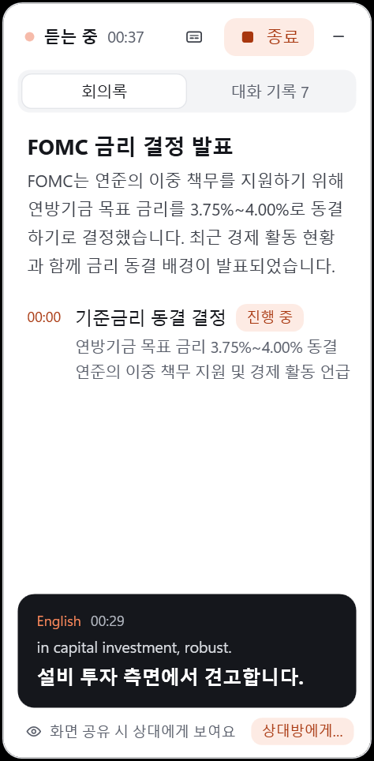

Cicada(知了)는 컴퓨터에서 재생되는 소리를 듣고, 실시간 이중 언어 자막과 회의록(요약·안건·결론)을 띄우는 무료 오픈소스 앱(Apache-2.0)이에요. 유튜브 생방송·기자회견·화상 회의처럼 컴퓨터에서 나는 소리라면 다 돼요. 맥·윈도우·리눅스·안드로이드용이 있어요. 아래 화면과 숫자는 저희가 11/6 윈도우 PC에서 연준 10/28 FOMC 기자회견(영어)을 넣어 직접 돌린 결과예요. 설치·설정 단계는 공식 설치 문서 기준이에요.
공식 웹사이트 cicada.indaloop.app/ko/download/ 또는 깃허브 Releases에서 받아요. 윈도우는 대부분 x64(Cicada-<버전>-Windows-x64.exe), 스냅드래곤 노트북은 ARM64. 맥은 Cicada-<버전>-macOS-AppleSilicon.dmg(애플 칩) / -Intel.dmg.
윈도우: 더블 클릭하면 관리자 권한 없이 설치돼요. 아직 코드 서명이 없어서 SmartScreen이 막으면 '추가 정보 › 실행'. 맥: dmg를 열어 응용 프로그램 폴더로 끌어 넣고, 처음 열 때 막히면 시스템 설정 › 개인정보 보호 및 보안에서 '그래도 열기'. 처음 열면 남은 설정 단계(키 연결·테스트 소리·샘플 회의)가 차례로 나와요.
Ling 개방 플랫폼(chat.ant-ling.com/platform/api)에 가입 → 토큰 만들기 → sk- 로 시작하는 키 복사 → Cicada 설정 › AI 서비스에 붙여 넣고 '저장 및 확인'. 공식 README: Ling은 매달 10위안 크레딧을 주고, 1시간 회의에 약 0.15~1위안(맥 기준 안내).
Ling 가입이 어려우면 설정 › AI 서비스 오른쪽 위에서 서비스를 '기타(OpenAI 호환)'로 바꿔요. ① 주소: https://generativelanguage.googleapis.com/v1beta/openai/ ② 키: 구글 AI 스튜디오(aistudio.google.com/apikey)에서 만든 키 ③ 듣기 모델: gemini-3.1-flash-lite ④ 글(번역·회의록) 모델: models/gemini-3.5-flash — 저희는 앞에 models/ 를 안 붙였더니 '이 서비스에 모델이 없습니다'가 떴고, 붙이니 통과했어요. 저장하면 앱이 키·글·듣기를 차례로 검사해요(저희: 글 2.4초·듣기 1.6초로 통과). 요금은 구글 요금표대로 쓴 만큼 나가요.
회의록 창의 주황색 '듣기 시작'을 누르고 영상·방송을 틀어요. 자막 언어는 기본으로 컴퓨터 언어(한국어)를 따라가요. 말하는 동안엔 '말하는 중'으로 빠른 번역이 먼저 뜨고, 문장이 끝나면 다듬은 번역으로 바뀌어요. 맥은 ⌃⌥S로 회의록 창 / 자막 바 / 숨김을 오가요(공식 README).
듣기 시작 뒤 약 30초면 첫 메모가 생기고(앱 안내 '말을 시작하면 약 30초 뒤 첫 메모'), 그 뒤로 계속 고쳐 써요. 요약 · 안건(시각과 함께) · 결론 · 용어집이 쌓이고, 결론을 누르면 그 말을 한 원문으로 가요(공식 README, 맥 기준). '대화 기록' 칸엔 원문과 번역이 문장마다 남아요.

'종료'를 누르면 회의가 저장돼요. 녹음·기록·회의록은 내 컴퓨터에만 저장되고, 나중에 회의록을 다시 만들거나 Markdown·Word·SRT 자막으로 내보낼 수 있어요(공식 README, 맥 기준).
11/6 윈도우 PC, 서비스는 기타(OpenAI 호환)=Gemini. 연준 10/28 FOMC 기자회견 첫 3분 20초를 넣었어요 → 말이 끝나고 한국어 완성 문장이 뜨기까지 46문장 중앙값 2.8초(31문장이 3초 안, 느린 쪽 3.9초) → 시작 약 26초 뒤 첫 요약 'FOMC는 연방기금 목표 금리를 3.75%~4.00%로 동결…' → 약 50초마다 요약·결론이 고쳐 써짐. 영어 받아쓰기를 연준 공식 전문(예비본)과 맞춰 보니 429단어 중 실제로 틀린 낱말은 2개였어요('and'를 'in'으로, 'investment'를 한 번 더 씀).
설정 › AI 서비스 › 기타(OpenAI 호환) › 주소
https://generativelanguage.googleapis.com/v1beta/openai/
같은 화면 › 듣기 모델
gemini-3.1-flash-lite
같은 화면 › 모델
models/gemini-3.5-flash
브라우저에
https://cicada.indaloop.app/ko/download/
도움이 되셨다면
@ai.antenna.kr
에서 바로 쓰는 AI 활용법을 계속 올립니다.